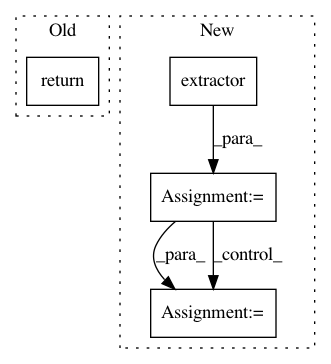

827e12f3b9506e0f78cc79445441cd9d1f25c055,chainercv/links/model/yolo/yolov3.py,YOLOv3,__call__,#YOLOv3#Any#,55
Before Change
elif i in {36, 44}:
h = F.concat((_upsample(h), hs.pop()))
return ys
After Change
def __call__(self, x):
ys = []
for h, link in zip(self.extractor(x), self.subnet):
h = link(h)
h = F.reshape(h, (h.shape[0], 3, 1 + 4 + self.n_fg_class, -1))
h = F.transpose(h, (0, 3, 1, 2))
ys.append(h)
return F.concat(ys)
In pattern: SUPERPATTERN
Frequency: 3
Non-data size: 4
Instances
Project Name: chainer/chainercv
Commit Name: 827e12f3b9506e0f78cc79445441cd9d1f25c055
Time: 2018-04-24
Author: Hakuyume@users.noreply.github.com
File Name: chainercv/links/model/yolo/yolov3.py
Class Name: YOLOv3
Method Name: __call__
Project Name: tensorflow/datasets
Commit Name: e023502ef2c339ca27877178c7ebf803c7bb8fd5
Time: 2019-04-12
Author: chrisgo@google.com
File Name: tensorflow_datasets/scripts/document_datasets.py
Class Name:
Method Name: schema_org
Project Name: estnltk/estnltk
Commit Name: fe94debace2da4596adca40078f0d23c89e1ba59
Time: 2015-09-10
Author: tpetmanson@gmail.com
File Name: estnltk/prettyprinter/marker.py
Class Name:
Method Name: create_tags_for_layer